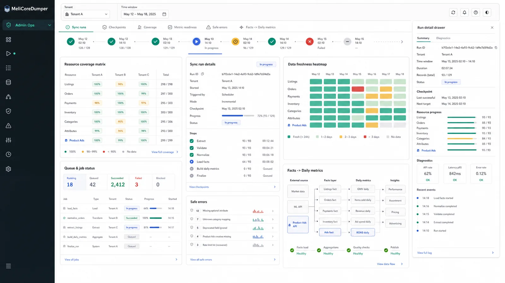

Fixing the GameSir Nova Lite mode switch
Which firmware pairing of controller and receiver works, with steps, screenshots and the dongle kit to download.
Read the guide (in Spanish)I'm Gabriel Garcia. I design and build products that combine data, APIs and product judgment. Here are three.

Syncs Mercado Libre data and turns it into metrics, trends and anomalies.
Analytics for sellersBrings stock from several suppliers into one place to search, compare and build orders.
3D printing filamentCollects Mercado Libre reviews in one place and shows how each product's rating changes over time.
Review tracking

Which firmware pairing of controller and receiver works, with steps, screenshots and the dongle kit to download.
Read the guide (in Spanish)Root cause, diagnosis and guarded repair when AMD's OpenGL and Vulkan are missing after replacing the graphics card.
Read the guideI turn data into decisions. I work on automation, dashboards and operational intelligence products, with Python, SQL, Power BI and PostgreSQL.
I also run a 3D printing business that reached 1,000 sales a year on Mercado Libre.